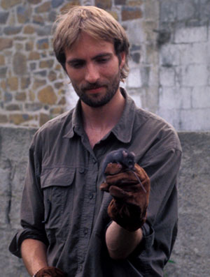

| Rollin Verlinde | |
 |
|
| homepage | Vilda Natuurfotografie |
| woonplaats |
Lindendries 136 |
| foto's |
Blauwborst Dovrefjell, Noorwegen juli 1998 |
| materiaal | Voor de verschillende types van vleermuisfotografie wordt
uiteraard verschillend materiaal gebruikt. Voor winterslapende vleermuizen
meestal een 200 mm macrolens, zodat toch een redelijke afstand tot de zeer
snel verstoorde diertjes kan gehouden worden. Via twee flexibele armen worden
twee flitsen op het onderwerp gericht. Sommige soorten slapen zeer diep
en dan kan ook een tegenlichtflits worden gebruikt. Dieren in zomerkolonies worden ongeveer op dezelfde manier gefotografeerd. bij minder schuwe soorten wordt soms een 105 mm macrolens bovengehaald. Vluchtopnames gebeuren met een infraroodstraal, als die doorbroken wordt gaan de flitsers automatisch af. De truc is natuurlijk om de vleermuizen door die straal te laten vliegen. Verder is veel niet-fotomateriaal nodig, van een complete opvouwbare studio van 3x8 meter tot klim- en speleologiemateriaal. Rollin zit ook in het bestuur van de vleermuizenwerkgroep, en heeft deze soortgroep jarenlang bestudeerd vooraleer met fotografie te beginnen. Dat is nodig want veel soorten zijn zeer zeldzaam, onder andere door verstoring. |
| opmerkingen | Heb je je ooit afgevraagd hoe al die natuurfoto's worden
gemaakt? Op de site van Rollin Verlinde krijg je een kijk achter de schermen! Zowel amateur als professionele natuurfotografen kunnen hun hart ophalen bij de talloze 'trucjes' om schitterende beelden te maken. Er staat een bescheiden fotografie-cursus online. Wie nog er nog niet genoeg van heeft kan zich inschrijven in de natuurfotoclub. |